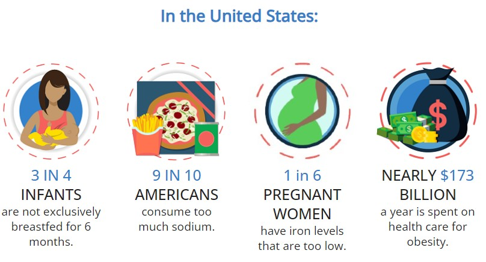

What is Nutrition?
Nutrition is eating a regular, balanced diet. Good nutrition supplies the nutrients your body needs to maintain your immune system, brain, bone, muscle, skin, nerves, and blood circulation. In order to have good nutrition, one must consume enough macronutrients (carbohydrates, protein, fat) and micronutrients (vitamins and minerals). Although there may be barriers to accessing healthy foods, organizations like the CDC (Center for Disease Control and Prevention) and nonprofit organizations are actively working to reduce these barriers, by investing in Healthy Schools programs, publishing guidelines, and improving access to healthy foods in low-income urban areas. Ultimately, it is often up to the individual to manage their diet and maintain a balanced nutrition. To do so, resources like the Canada Food Guide (pictured above) can be helpful.

Unhealthy Eating
Many people (especially those living in the United States) don't eat a healthy diet and consume too much sodium, saturated fat, and sugar, increasing the risk of chronic diseases. Fewer than 1 in 10 people eat enough fruits or vegetables, while over 50% of Americans consume at least one sugary drink every day.
Such unhealthy eating habits lead to many adverse effects, such as:
- Overweight and obesity
- Heart Disease and stroke
- Type 2 Diabetes: 1 in 3 adults have prediabetes, with 8 in 10 not knowing so
- Cancer (endometrial, breast, colorectal, etc.)
Excessive technology use has clear links to unhealthy eating habits, as people become less active (requiring less focus on nutrition) and junk food/fast food becoming more accessible (i.e. food delivery apps). It is important to be aware of these negative consequences, not opting to be lazy, but rather stay mindful when choosing what to eat.